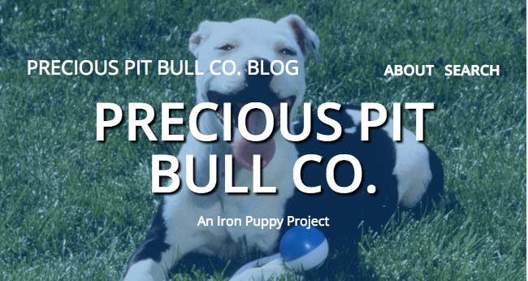

View the project live or view the code on Github.
This project is based on the first project I completed at The Iron Yard. Originally, it was a non-responsive design which I created pixel perfectly, thanks to my friends inspect element and the PixelPerfect Chrome extension. My next assignment was to revise the code and make the site responsive. After we learned about Sass, I converted the CSS to Sass. To get this piece portfolio ready, I switched out the content and revised the Sass.
HTML, Sass, RWD.
The biggest challenge I faced with all iterations of this project was revising code that I hadn't looked at recently. I realized that I wasn't able to jump right in; I needed to be able to spend time getting reacquainted with the code. The biggest problem I solved with this project was turning a non-responsive website into a responsive website.
